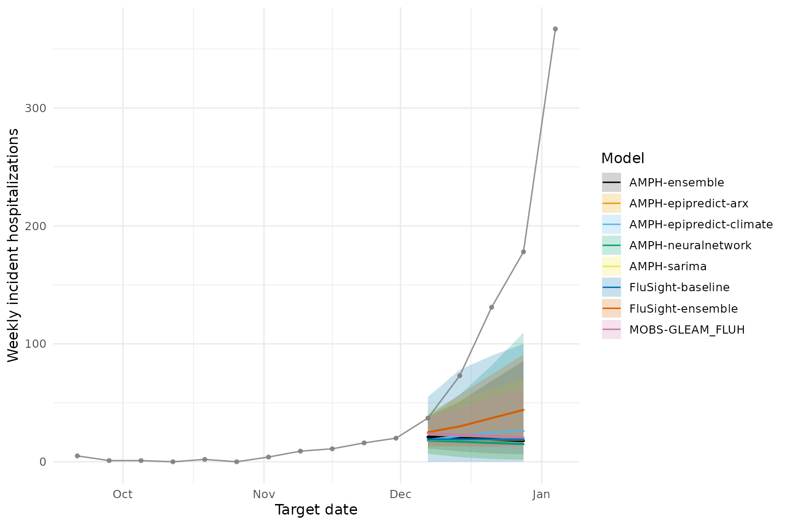

AMPH 2025: Simple Ensemble, Visualization, and Scoring Using Hub Model Output
Source:vignettes/utilizing-hub-output.Rmd
utilizing-hub-output.Rmd1) Setup
Install & load required R packages
## Loading required package: gitcreds## Loading required package: jsonlite## Loading required package: remotes## Loading required package: scales## Loading required package: tidyverse## ── Attaching core tidyverse packages ──────────────────────── tidyverse 2.0.0 ──
## ✔ dplyr 1.1.4 ✔ readr 2.1.5
## ✔ forcats 1.0.1 ✔ stringr 1.5.2
## ✔ ggplot2 4.0.0 ✔ tibble 3.3.0
## ✔ lubridate 1.9.4 ✔ tidyr 1.3.1
## ✔ purrr 1.1.0
## ── Conflicts ────────────────────────────────────────── tidyverse_conflicts() ──
## ✖ readr::col_factor() masks scales::col_factor()
## ✖ purrr::discard() masks scales::discard()
## ✖ dplyr::filter() masks stats::filter()
## ✖ purrr::flatten() masks jsonlite::flatten()
## ✖ dplyr::lag() masks stats::lag()
## ℹ Use the conflicted package (<http://conflicted.r-lib.org/>) to force all conflicts to become errors
## Registered S3 method overwritten by 'tsibble':
## method from
## as_tibble.grouped_df dplyr
##
## Registered S3 method overwritten by 'epipredict':
## method from
## print.step_naomit recipes2) Get FluSight data repo
The FluSight Github repository stores forecast data for the 2023-2024 FluSight collaborative exercise run by the US CDC. This project collects forecasts for weekly new hospitalizations due to confirmed influenza. More information can be found in the ReadMe of the repository: https://github.com/cdcepi/FluSight-forecast-hub.
We will copy a set of forecasts from this repository, and use them to build a simple ensemble, visualize the forecasts, and score them against observed data.
repo_dir <- clone_hub_repos(disease = forecast_disease,
clone_dir = getwd())## Cloning repository...## Cloning into 'FluSight-forecast-hub'...
## Updating files: 37% (1008/2713)Updating files: 38% (1031/2713)Updating files: 39% (1059/2713)Updating files: 40% (1086/2713)Updating files: 41% (1113/2713)Updating files: 42% (1140/2713)Updating files: 43% (1167/2713)Updating files: 44% (1194/2713)Updating files: 45% (1221/2713)Updating files: 46% (1248/2713)Updating files: 47% (1276/2713)Updating files: 48% (1303/2713)Updating files: 49% (1330/2713)Updating files: 50% (1357/2713)Updating files: 51% (1384/2713)Updating files: 52% (1411/2713)Updating files: 53% (1438/2713)Updating files: 54% (1466/2713)Updating files: 55% (1493/2713)Updating files: 56% (1520/2713)Updating files: 57% (1547/2713)Updating files: 58% (1574/2713)Updating files: 59% (1601/2713)Updating files: 60% (1628/2713)Updating files: 61% (1655/2713)Updating files: 62% (1683/2713)Updating files: 63% (1710/2713)Updating files: 64% (1737/2713)Updating files: 65% (1764/2713)Updating files: 66% (1791/2713)Updating files: 67% (1818/2713)Updating files: 68% (1845/2713)Updating files: 69% (1872/2713)Updating files: 70% (1900/2713)Updating files: 70% (1902/2713)Updating files: 71% (1927/2713)Updating files: 72% (1954/2713)Updating files: 73% (1981/2713)Updating files: 74% (2008/2713)Updating files: 75% (2035/2713)Updating files: 76% (2062/2713)Updating files: 77% (2090/2713)Updating files: 78% (2117/2713)Updating files: 79% (2144/2713)Updating files: 80% (2171/2713)Updating files: 81% (2198/2713)Updating files: 82% (2225/2713)Updating files: 83% (2252/2713)Updating files: 84% (2279/2713)Updating files: 85% (2307/2713)Updating files: 86% (2334/2713)Updating files: 87% (2361/2713)Updating files: 88% (2388/2713)Updating files: 89% (2415/2713)Updating files: 90% (2442/2713)Updating files: 91% (2469/2713)Updating files: 92% (2496/2713)Updating files: 93% (2524/2713)Updating files: 94% (2551/2713)Updating files: 95% (2578/2713)Updating files: 96% (2605/2713)Updating files: 97% (2632/2713)Updating files: 98% (2659/2713)Updating files: 98% (2668/2713)Updating files: 99% (2686/2713)Updating files: 100% (2713/2713)Updating files: 100% (2713/2713), done.## Using repo_dir: /home/runner/work/AMPH_Forecast_Suite/AMPH_Forecast_Suite/vignettes/FluSight-forecast-hubCopy specific forecast round to the model-output folder
We will copy forecasts from a set of models from FluSight. These include: # - FluSight-baseline # - MOBS-GLEAM_FLUH # - FluSight-ensemble
# models from flusight
models_to_copy <- c(
"FluSight-baseline",
"MOBS-GLEAM_FLUH",
"FluSight-ensemble"
)
#models from AMPH
models_created_in_AMPH <- list.dirs("model-output", full.names = FALSE, recursive = FALSE)
# copy Forecast Hub forecasts to model-output folder
copy_fch_outputs(repo_dir,
forecast_date,
models_to_copy)## Copied files for date 2024-11-30 to /home/runner/work/AMPH_Forecast_Suite/AMPH_Forecast_Suite/vignettes/model-output4) Load model output (hub forecasts & your forecasts)
output_path <- file.path("model-output")
# Retrieve parquet/csv model output files and keep those matching the reference date
file_paths <- list.files(output_path, pattern = "\\.(parquet|csv)$",
full.names = TRUE, recursive = TRUE)
file_paths <- file_paths[grepl(forecast_date, file_paths)]
if (!length(file_paths)) {
stop("No model-output files found for forecast_date = ", forecast_date,
". Try a different date.")
}
# Read & bind; keep quantile forecasts; add model_id from folder name
projection_data_all <- file_paths %>%
purrr::map_dfr(function(.x) {
df <- read_model_file(.x)
# standardize expected columns just in case
if (!"output_type" %in% names(df)) stop("Missing 'output_type' in: ", .x)
if (!"output_type_id" %in% names(df)) stop("Missing 'output_type_id' in: ", .x)
df %>%
dplyr::filter(.data$output_type == "quantile") %>%
dplyr::mutate(
output_type_id = suppressWarnings(as.numeric(.data$output_type_id)),
model_id = basename(dirname(.x))
)
})
prep_proj_data <- projection_data_all %>%
dplyr::mutate(
reference_date = forecast_date,
target_end_date = dplyr::coalesce(target_end_date, reference_date + 7 * as.integer(horizon))
) %>%
dplyr::select(-tidyselect::any_of(c("model", "origin_date")))
# Convert to hubverse model_out_tbl format
projection_data_tbl <- hubUtils::as_model_out_tbl(prep_proj_data) %>%
dplyr::filter(model_id %in% c(
models_created_in_AMPH,
models_to_copy
))
# Read and join location metadata (for names/abbreviations)
# loc_data <- readr::read_csv(file.path(dir_path, "auxiliary-data", "locations.csv"),
# show_col_types = FALSE)
data(loc_data, package = "AMPHForecastSuite")
projection_data_tbl2 <- projection_data_tbl %>%
dplyr::left_join(
loc_data %>%
mutate(location = tolower(abbreviation)) %>%
dplyr::select(location, location_name) %>%
bind_rows(
loc_data %>%
dplyr::select(location, location_name)),
by = "location"
) %>%
dplyr::mutate(location_name = dplyr::coalesce(location_name, location))
dplyr::distinct(projection_data_tbl, model_id)## # A tibble: 7 × 1
## model_id
## <chr>
## 1 AMPH-epipredict-arx
## 2 AMPH-epipredict-climate
## 3 AMPH-neuralnetwork
## 4 AMPH-sarima
## 5 FluSight-baseline
## 6 FluSight-ensemble
## 7 MOBS-GLEAM_FLUH5) Pick location, start date, and uncertainty bands
# Location can be "US" or a full state name (must match location_name in target_data)
loc <- state_name
start_date <- lubridate::as_date(forecast_date) - lubridate::weeks(12)
# Middle 80% interval:
uncertainty <- c(0.1, 0.9)
uncertainty## [1] 0.1 0.96) Build a simple equal-weight ensemble
# Filter submitted projections to the location of interest
projection_data <- projection_data_tbl2 %>%
dplyr::filter(.data$location_name == loc)
# Keep only the chosen forecast round
round_dat <- projection_data %>%
dplyr::filter(target == target,
output_type == "quantile",
horizon >= 0) %>%
dplyr::collect()
# Generate a simple (equal-weight) ensemble across contributing models
round_ens <- hubEnsembles::simple_ensemble(
round_dat %>%
dplyr::filter(!(model_id %in% c("FluSight-baseline",
"FluSight-ensemble",
"AMPH-epipredict-climate")))) %>%
mutate(model_id = "AMPH-ensemble")
# Combine ensemble with individual models for plotting
plot_df <- dplyr::bind_rows(round_dat, round_ens)
unique(plot_df$model_id)## [1] "AMPH-epipredict-arx" "AMPH-epipredict-climate"
## [3] "AMPH-neuralnetwork" "AMPH-sarima"
## [5] "FluSight-baseline" "FluSight-ensemble"
## [7] "MOBS-GLEAM_FLUH" "AMPH-ensemble"7) Prepare data for visualization
# pull updated target data
new_target_data_date <- lubridate::as_date(forecast_date) + lubridate::weeks(5)
target_data_plot <- get_nhsn_data(
disease = forecast_disease,
geo_values = geo_ids,
forecast_date = new_target_data_date,
save_data = TRUE
)## Important: forecast_date is more than 1 week ago. Pulling data issued prior to forecast_date.## Pulling data issued on or before 2025-01-04## Warning: No API key found. You will be limited to non-complex queries and encounter rate
## limits if you proceed.
## ℹ See `?save_api_key()` for details on obtaining and setting API keys.
## This warning is displayed once every 8 hours.
target_data_plot <- readr::read_csv(
file.path("target-data", paste0("target-hospital-admissions-", new_target_data_date, ".csv")),
show_col_types = FALSE)
# Forecasts to tidy plot
proj_data <- hubUtils::as_model_out_tbl(plot_df) %>%
dplyr::rename(target_date = target_end_date) %>%
dplyr::mutate(output_type_id = suppressWarnings(as.numeric(output_type_id))) %>%
dplyr::arrange(model_id, horizon, target_date, output_type_id) %>%
dplyr::distinct(model_id, horizon, target_date, output_type_id, .keep_all = TRUE)
# Observed data for the same location and time window
target_data_plot <- target_data_plot %>%
dplyr::filter(time_value > start_date) %>%
dplyr::rename(observation = value,
date = time_value)
head(proj_data)## # A tibble: 6 × 10
## model_id target_date reference_date target horizon location location_name
## <chr> <date> <date> <chr> <dbl> <chr> <chr>
## 1 AMPH-ensemble 2024-11-30 2024-11-30 wk in… 0 24 Maryland
## 2 AMPH-ensemble 2024-11-30 2024-11-30 wk in… 0 24 Maryland
## 3 AMPH-ensemble 2024-11-30 2024-11-30 wk in… 0 24 Maryland
## 4 AMPH-ensemble 2024-11-30 2024-11-30 wk in… 0 24 Maryland
## 5 AMPH-ensemble 2024-11-30 2024-11-30 wk in… 0 24 Maryland
## 6 AMPH-ensemble 2024-11-30 2024-11-30 wk in… 0 md Maryland
## # ℹ 3 more variables: output_type <chr>, output_type_id <dbl>, value <dbl>
head(target_data_plot)## # A tibble: 6 × 7
## geo_value source disease signal issue_date date observation
## <chr> <chr> <chr> <chr> <date> <date> <dbl>
## 1 md nhsn influenza confirmed_admiss… 2024-12-29 2024-09-08 3
## 2 md nhsn influenza confirmed_admiss… 2024-12-29 2024-09-15 5
## 3 md nhsn influenza confirmed_admiss… 2024-12-29 2024-09-22 1
## 4 md nhsn influenza confirmed_admiss… 2024-12-29 2024-09-29 1
## 5 md nhsn influenza confirmed_admiss… 2024-12-29 2024-10-06 0
## 6 md nhsn influenza confirmed_admiss… 2024-12-29 2024-10-13 28) Plot forecasts vs. truth
# This is having issues
hubVis::plot_step_ahead_model_output(
proj_data,
target_data = target_data_plot,
use_median_as_point = TRUE,
show_legend = TRUE,
intervals = 0.8,
ens_name = "AMPH-ensemble",
ens_color = "black"
)
library(dplyr)
library(tidyr)
library(ggplot2)
library(scales)
# target_data_plot <- readr::read_csv(
# file.path("target-data", paste0("target-hospital-admissions-", new_target_data_date, ".csv")),
# show_col_types = FALSE)
# Identify ensemble id from the object you created earlier
ens_id <- unique(round_ens$model_id)[1] # e.g., "hub-ensemble"
# Build the 80% ribbon (0.1 / 0.9) for all models
ribbon_80 <- proj_data %>%
filter(output_type == "quantile", output_type_id %in% c(0.1, 0.9)) %>%
mutate(output_type_id = as.numeric(output_type_id)) %>%
select(model_id, horizon, target_date, output_type_id, value) %>%
pivot_wider(names_from = output_type_id, values_from = value, names_prefix = "q") %>%
rename(ymin = q0.1, ymax = q0.9)
# Median (0.5) for all models
med_50 <- proj_data %>%
filter(output_type == "quantile", output_type_id == 0.5) %>%
select(model_id, horizon, target_date, value) %>%
mutate(line_width = if_else(model_id == ens_id, 1.1, 0.8))
# Legend order: others first, ensemble last
model_levels <- proj_data %>%
distinct(model_id) %>%
pull(model_id) %>%
setdiff(ens_id) %>%
c(ens_id)
# Okabe–Ito palette (color-blind friendly)
okabe_ito <- c(
"#E69F00", "#56B4E9", "#009E73", "#F0E442",
"#0072B2", "#D55E00", "#CC79A7", "#999999"
)
n_other <- length(model_levels) - 1
other_cols <- if (n_other <= length(okabe_ito)) okabe_ito[seq_len(n_other)] else scales::hue_pal(l = 45, c = 100)(n_other)
# Lines: others = Okabe–Ito, ensemble = black
color_vals <- setNames(c(other_cols, "#000000"), model_levels)
# Ribbons: same hues; ensemble darker gray so black line pops
fill_vals <- setNames(c(other_cols, "#3A3A3A"), model_levels)
ggplot() +
geom_ribbon(
data = ribbon_80,
aes(x = target_date, ymin = ymin, ymax = ymax, fill = model_id),
alpha = 0.22, show.legend = TRUE
) +
geom_line(
data = med_50,
aes(x = target_date, y = value, color = model_id, linewidth = line_width),
lineend = "round", alpha = 0.98, show.legend = TRUE
) +
geom_point(
data = target_data_plot,
aes(x = date, y = observation),
size = 1.2, alpha = 0.85, inherit.aes = FALSE,
color = "grey50"
) +
geom_line(
data = target_data_plot,
aes(x = date, y = observation),
alpha = 0.85, inherit.aes = FALSE,
color = "grey50"
) +
scale_color_manual(values = color_vals, name = "Model") +
scale_fill_manual(values = fill_vals, name = "Model") +
scale_linewidth_identity() +
labs(x = "Target date", y = "Weekly incident hospitalizations") +
theme_minimal(base_size = 12) +
theme(legend.position = "right")## Warning: Removed 8 rows containing missing values or values outside the scale range
## (`geom_ribbon()`).
10) Score forecasts (WIS, coverage)
target_data_plot <- readr::read_csv(
file.path("target-data", paste0("target-hospital-admissions-", new_target_data_date, ".csv")),
show_col_types = FALSE)
scoring_target_data <- target_data_plot %>%
filter(geo_value %in% geo_ids,
issue_date >= forecast_date + 28,
time_value > "2022-09-01") %>%
select(geo_value, time_value, value) %>%
drop_na(value) %>%
epiprocess::as_epi_df(time_value = time_value)
# Join forecasts with observations at (target_date, location)
# and conform to scoringutils "forecast" structure.
scoring_df <- dplyr::left_join(
proj_data,
scoring_target_data %>%
dplyr::rename(observation = value,
target_date = time_value) %>%
mutate(location_name = "Maryland") %>%
select(-geo_value),
by = c("target_date", "location_name"),
relationship = "many-to-one"
) %>%
dplyr::rename(
model = model_id,
predicted = value,
observed = observation,
quantile_level = output_type_id
)
# Convert to a scoringutils forecast object
forecast <- scoringutils::as_forecast_quantile(
scoring_df,
observed = "observed",
predicted = "predicted",
quantile_level = "quantile_level",
# be explicit so extra cols don't confuse the unit of a single forecast
forecast_unit = c("model", "location_name", "target_date")
)
# Score (WIS, coverage, etc.)
scores <- scoringutils::score(forecast)
scoringutils::summarise_scores(scores, by = "model")